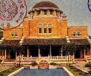

呂清夫 撰文

如果有所謂的都市之肺，那麼，台北之肺應是植物園，畫畫或照相的朋友如果要取材，第一個想到的，恐怕也是植物園。對台北人而言，它可能是紅塵中的綠洲。它不若新生公園的噪音壓頂，也不若南港公園的孤寂偏僻。相比之下，歐式的榮星花園已經年華老去，中式的雙溪公園則又過於濃妝。中山公園顯得空疏，青年公園顯得駁雜。在滄海桑田的老公園中，北投公園已經毫無章法，只留石橋一座，略表匠心，台北公園亦已不西不中，唯獨希臘式的博物館，差可不朽。植物園自然也處在「開發」的刀光劍影之中。所幸在南海學園建成之後，還保留了大半綠地，內植一千多種植物，單單竹子就有六十多種。從十幾公分的迷你竹，到世界最大的巨竹一應俱全。有的竹桿呈葫蘆狀，有的竹桿作長方柱。有呈紫黑色者，有具彩色線條者，更有實心的印度「實竹」。從南口進去，左邊就可以看到這一片竹林，林中幽靜得讓你忘了人在市區，彷彿回到了鄉下。園內的印度植物也不少，就在荷花池附近，有扇椰子，印度人曾用以寫經（即所謂貝葉經），或無憂樹，相傳佛祖誕生其下。有念珠樹，種子可以做念珠，又如菩提樹，相傳佛祖在樹下證道……。不知是不是因為這種佛教的氣氛使然，樹下竟有幾個墳墓。但也可能反過來，先有墳墓，才種那些樹。據文獻記載，日據時代植物園地產，多屬蜢舺何家所有，日人收購土地時，曾約定存此墳墓不拆。只是墳墓並不都姓何，據園方解釋，似乎是後來有人在此亂葬之故，而我們的傳統是不隨便遷人墳墓的，因之，也都成了某種「古蹟」。倒是有一件法國傳教士佛利的銅像，不知被搬到哪裏去了，文獻說他也是一個植物採集家，曾在台灣各地一邊傳教，一返採集植物，對本省學界極有貢獻，足資紀念，雕像立於一九一七年。我想植物園之所以有今天的規模，而且名列世界植物園名錄，一定有過很多佛利這種「為植物而植物」的人，在犧牲奉獻，為他們留個銅像應是起碼的敬意，也可以使園區倍增文化氣息。難怪巴黎的區區一個盧森堡花園之中，文化人的雕像，竟多達數十件。有一天在植物園的荷花池旁，看到一群人竟然不在向前看，也不是向上看，而是蹲下來盯著水泥路上的裂縫看，一名解說員正指著裂縫中的小草跟大家說，不要小看被你踩在腳下的小草，它們雖然小到不及一公分，但是都有特別的造形，有的像馬蹄，有的如寶塔，可謂一草一世界，而且都可以叫得出名字，例如馬蹄金、塔花、雷公根、車前草、假吐金菊等是，而更重要的是，它們多半是藥用植物，只是它們一點也不引起你的注意。這使我想起了植物園的管理室，低矮破舊窄小偏僻，但是門口卻掛了一塊罕見的牌子，上面寫著：「上班時間歡迎入內賜教。」字體雖不工整，好像是管理員自己寫的，但反而倍感親切。某日我曾好奇地進去看一下，原來這裏也是解說員的辦公室，只是地方狹促，如同兩間簡陋的單身房，很多義工或解說員都苦無落腳之地，這與南海學園的氣派軒昂，構成一大對比。南海學園有沒有必要蓋在植物園內，貫在不無爭議，情況與七號公園內興建體育館是一樣的。事實上當初的植物園約有現在的兩倍，單單木本植物，就有一千多種。光復之初，園區也有現在的一點五倍，據「台北市志稿卷」的記載，現在的國語實小也「位在本市南海路植物園內……，校舍原係日人所建的建功神社」（見上圖），用已奉祀所有對台灣有貢獻的人士，不拘日本人或台灣人。今天我們在國語實小校園之內，以及植物園的南區同時都可以看到欖仁樹之類，可知其占地之廣。不僅如此，從南海學園到重慶南路間的一大片土地，也都屬於園區，當時種什麼樹也都留有記載。但是目前這一帶實在亂七八糟，樹多半被砍光了，到處是圍來圍去的磚牆與鐵柵，只是有些亂巷走到底往往可以看到朱門大戶，而超級大戶則是新建的農委會大樓，好像一隻巨無霸的紅色怪獸從天雨降，然而園方則說，這一帶的地產仍是屬於植物園的。當我們坐在菩提樹前的荷花池邊，放眼看到池上的荷花與長堤固然賞心悅目，但是你的視線不能再抬高，否則你就要看到了農委會大樓和南海學園的黑白配，兩群公共建築之間竟是那麼格格不入，而那種拔地擎天的態勢，更使池邊的風韻喪失殆盡，那種東拼西湊的景象，大約只能在夢裏偶然看到。只是如將農委會大樓孤立起來看，倒是氣宇不差，而我竟奇怪地發現，它和不遠處建中的歐風校舍倒頗能調和。植物園之為物不但要地大，而且園林房舍的配置更要考究。英國的基尤植物園（Kew Gardens)便是一個例子，它比我們的植物園太上十五倍，植物有一萬多種。園區在創立當年，大概為了製造一點異國情調，還請設計師錢伯斯(C.Chambers）詳加規畫，只因為這個人曾在東印度公司服務，並在中國住過，研究過中國建築。所以至今我們仍可看到中國式的寶塔矗立於園中，讓我們感到傳統英國的文化包容性。慕尼黑植物園也有植物一萬種，他們也在布局上力求美觀，且闢有一個大型的岩石花園，種植群眾喜愛的植物，園林的重點放在植物生態的觀察，因之，賞心悅目的園林設計乃成了必要的條件。台北植物園的布局本來也頗有可觀，從博愛路尾巴的正門進去，大家馬上看到的是左右兩排的肯氏南洋杉，其茂密的墨綠，蔽天的濃蔭，使人立有步入原始林之感。接著南洋杉之後，便豁然開朗，出現了高聳的大王椰子，十分壯觀。直走轉右，當你踩到木材鋪成的地磚以後，便可看到美麗的花圃，有一串紅、三色蓳、金魚草、仙丹花，紅葉的洋莧，池中的睡蓮……，蓮花池左右各一，應係日據時代殘留的東西，池形很像一個考究的相框，但用堅硬的深色石頭砌成，極有韻致，池面深深，也使整個地塘顯得極有立體感。可惜池子當中的雕刻已被打斷，僅留殘跡。至於花圃當中的新水池則很單調，用水泥作成又笨又大的長方形，這和池畔的溫室被貼上瓷磚一樣地乏味。從花圃折出來往右走，可以不期而遇假山一座，更確切地說，應是壘石而成的一座石樓，有門有窗，外觀頗有粗獷之美，據說原係舊撫台衙門之遺物，一九三三年原在他處行將拆毀，乃由基隆聞人顏國彥斥資移建於此，另有一部分移築於圓山。可惜現場不見任何說明，每個遊客都要猜謎半天。假山之下也有池塘，石映水中，花開其間，頗不乏味，可惜又是新建一個圓形拱門在池塘之上，甚不搭調，辜負了大好古蹟。再往南走，還可以碰到古蹟，那是一座傳統的建築，但絕非所謂的宮殿式建築，外觀淳樸，頗有古意，係清朝市政使司衙門（一八八七年），本建於今天的中山堂原址，一九三三年因籌建中山堂，而被遷建於此。如今已被列為台北市的二級古蹟。這種古蹟的遷移在當時似乎屢見不鮮。例如「急功好義坊」原立於今衡陽路，後來日本人也把它搬到新公園內保存。只是古蹟的遷移要能掌握機先，否則像後來搬進新生公園的林安泰古厝，如要列為古蹟就不可能了。植物園的古衙門之旁，還有一座暗紅色的蠟葉標本館，它和園區東邊的「台灣電影製片廠」，都是園區內韻味十足的小建築，前耆厄於歐風，後者似乎是日本式與南※的混合，急陡的屋頂最是特別。當它們掩映在紅花綠葉、碧水藍天之際，可謂相得益彰。植物園還有很多可觀之物，例如以果實外形而得名的麵包樹、臘腸樹，生長相思豆的小寶孔雀豆，花開在樹幹上的蠟燭樹，果實長達半公尺的波羅蜜，具有抗癌藥性的喜樹，可作香水原料的香水樹，還有台灣油杉等多種瀕臨絕種的稀有植物。不僅如此，樹上常見松鼠，池中屢見綠頭鴨，鴨子據說是有人拿來放養的，目的只為著照相，有些影友還在林中設餌，引來鳥類駐足，即使拍完照片，來鳥仍舊流連不去。園中鳥類有白頭翁、雀類，美麗的翠鳥則是園區的留鳥。大家常說，只要多種樹，自有鳥飛來，不必用鳥籠，誠哉斯言！。台北有這麼一個植物園是值得驕傲的，它可能看著很多的台北人長大，因之，一定有不少人關心植物園，有人會擔心松鼠啃壞太多的樹皮，有人擔心植物園是否有蛇。然對於「不如老圃」的讀書人，對於「星盲」「樹言」的現代人，植物園必是一個讓你「可以興，可以發，多識於草木蟲魚之名」的好地方。至於想看綠色的人，這裏更可讓你一次「綠」個夠。西人嘗說，植物園的起源可以追溯到古代中國和地中海地方，草藥學家和草藥志促成了植物園的創立。但願今天的台北植物園不再割讓用地，南非開普敦的植物園是台北的八十倍，美國霍爾登林園是台北的一百餘倍，台北的植物園也不過只有八公頃，諸如農復會、農委會之類不要再在這裏動腦筋了。台北就只有這麼一個植物園，要蓋房子何必與樹爭地呢？農政單位要動腦筋的話，不是應使植物更加發榮滋長嗎？
原載1992.5.30.中國時報，收入1994呂清夫著「現代都市叢林派」